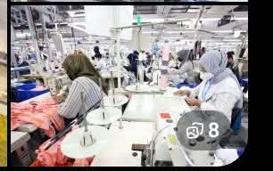

Konveksi di Rancaekek Bandung: Daftar Usaha Garmen, Produsen Pakaian dan Industri Tekstil

Rancaekek merupakan salah satu wilayah di Kabupaten Bandung yang memiliki aktivitas industri dan perdagangan cukup beragam. Selain dikenal sebagai kawasan yang berkembang di jalur Bandung–Garut, wilayah ini juga memiliki usaha konveksi, produksi pakaian, toko tekstil, hingga perusahaan manufaktur yang bergerak dalam bidang industri kain.
Keberadaan usaha konveksi dan industri tekstil membuat Rancaekek memiliki potensi ekonomi yang menarik, terutama dalam kegiatan produksi pakaian, perdagangan bahan kain, distribusi produk garmen, serta pengiriman barang ke berbagai daerah di Indonesia.
Bagi masyarakat yang sedang mencari konveksi di Rancaekek Bandung, berikut beberapa informasi usaha, wilayah industri, dan gambaran aktivitas bisnis pakaian yang dapat menjadi referensi.
Butuh Pengiriman Produk Konveksi?
Pemilik konveksi, seller pakaian, toko tekstil, dan pelaku UMKM dapat menghubungi Lion Parcel Bandung POS101 untuk menanyakan informasi layanan pengiriman paket.
💬 Chat WhatsApp 0851-8309-04861. Rancaekek Memiliki Potensi Industri Tekstil dan Pakaian
Aktivitas industri tekstil merupakan salah satu bagian penting dari perekonomian Kabupaten Bandung. Pemerintah Kabupaten Bandung dalam dokumen perencanaan pembangunan daerah menyebut industri tekstil, pakaian jadi, dan sepatu sebagai bagian dari potensi industri daerah.
Kecamatan Rancaekek juga termasuk salah satu wilayah yang disebut memiliki potensi industri. Kondisi ini didukung keberadaan perusahaan manufaktur, aktivitas perdagangan, dan usaha kecil yang bergerak di bidang pakaian.
Menurut publikasi Direktori Industri Manufaktur Kabupaten Bandung 2024 dari Badan Pusat Statistik Kabupaten Bandung, tercatat 963 perusahaan manufaktur skala menengah dan besar yang aktif di seluruh Kabupaten Bandung. Angka tersebut mencakup berbagai sektor manufaktur, bukan hanya industri tekstil atau perusahaan di Kecamatan Rancaekek.
Referensi data: Direktori Industri Manufaktur Kabupaten Bandung – BPS .
2. Daftar Usaha Konveksi dan Produsen Pakaian di Rancaekek
Berikut beberapa usaha yang tercatat dalam direktori bisnis dan pencarian lokasi di wilayah Kecamatan Rancaekek. Daftar ini dapat menjadi referensi awal bagi masyarakat yang ingin mencari jasa konveksi, produksi pakaian, atau pemasok produk tekstil.
A. Eyras Konveksi – Linggar
Eyras Konveksi merupakan usaha pakaian lokal yang tercatat berada di kawasan Linggar, Kecamatan Rancaekek, Kabupaten Bandung.
Lokasi: Linggar, Rancaekek, Kabupaten Bandung, Jawa Barat 40394.
B. SCL-LAB – Linggar
SCL-LAB merupakan usaha yang bergerak dalam bidang produksi apparel dan pakaian custom. Usaha ini tercatat berada di Jalan Rancakendal Dua, Linggar, Rancaekek.
Lokasi: Jl. Rancakendal Dua No.148, Linggar, Kecamatan Rancaekek, Kabupaten Bandung.
C. Worksind Konveksi – Bojongloa
Worksind Konveksi merupakan usaha lokal yang berkaitan dengan produksi pakaian dan jasa sablon. Lokasinya tercatat di kawasan Bojongloa, Kecamatan Rancaekek.
Lokasi: Bojongloa, Rancaekek, Kabupaten Bandung, Jawa Barat 40394.
D. KONVEKSI EMSA 19 Production – Rancaekek Wetan
KONVEKSI EMSA 19 Production merupakan salah satu usaha produksi pakaian yang tercatat di kawasan Rancaekek Wetan. Usaha ini dapat menjadi referensi bagi masyarakat yang mencari layanan konveksi lokal.
Lokasi: Perum Empang Sari, Jalan Lauk Emas No.19 Blok A, Rancaekek Wetan, Kabupaten Bandung.
E. CV AMA BERTIGA – Kawasan Rancaekek
CV AMA BERTIGA tercatat sebagai usaha yang bergerak dalam bidang pakaian dan konveksi. Lokasinya berada di kawasan Jalan Raya Majalaya–Rancaekek.
Lokasi: Kampung Pintu 1, Jalan Raya Majalaya–Rancaekek No.193D, Kecamatan Rancaekek, Kabupaten Bandung.
F. Fabric Industries Konveksi Rancaekek
Fabric Industries Konveksi Rancaekek merupakan usaha pakaian yang tercatat berada di kawasan Rancaekek Wetan. Lokasi ini dapat menjadi referensi tambahan bagi pencari produk kaos dan kebutuhan pakaian.
Lokasi: Jl. Pahlawan Memed No.49, Rancaekek Wetan, Kabupaten Bandung.
Catatan: Informasi nama dan alamat di atas berasal dari pencatatan direktori bisnis dan peta digital. Jenis layanan, status operasional, kapasitas produksi, serta alamat terbaru sebaiknya dikonfirmasi langsung kepada masing-masing usaha sebelum melakukan transaksi atau kunjungan.
3. Perusahaan Industri Tekstil di Kawasan Rancaekek
Selain konveksi skala kecil dan menengah, Rancaekek juga dikenal memiliki aktivitas industri tekstil. Perusahaan tekstil memiliki peran dalam rantai produksi pakaian, mulai dari pengolahan bahan baku, pembuatan benang, hingga penyediaan kain.
Beberapa perusahaan industri tekstil yang tercatat di kawasan Rancaekek antara lain:
A. PT Vonex Indonesia
PT Vonex Indonesia merupakan perusahaan manufaktur tekstil yang bergerak dalam industri pemintalan benang dan pencelupan. Perusahaan ini tercatat berlokasi di kawasan Linggar, Rancaekek, pada jalur Jalan Raya Bandung–Garut.
Lokasi: Jl. Raya Bandung–Garut KM 23,7, Linggar, Rancaekek, Kabupaten Bandung.
B. PT Lakumas Bandung
PT Lakumas Bandung merupakan perusahaan manufaktur yang bergerak dalam bidang pemintalan benang. Lokasinya berada di Jalan Raya Bandung–Garut KM 23,7, kawasan Linggar, Rancaekek.
C. PT Kosina Textile
PT Kosina Textile merupakan perusahaan yang tercatat dalam bidang industri tekstil di wilayah Linggar, Kecamatan Rancaekek. Keberadaan perusahaan tekstil seperti ini menjadi bagian dari aktivitas industri di koridor Bandung–Garut.
Perlu dibedakan bahwa perusahaan tekstil tidak selalu menerima pesanan jahit pakaian seperti konveksi. Perusahaan tekstil umumnya memiliki kegiatan produksi bahan baku atau kain untuk kebutuhan industri lanjutan.
4. Wilayah Rancaekek yang Memiliki Aktivitas Usaha Pakaian dan Tekstil
Aktivitas usaha pakaian dan tekstil di Rancaekek tidak hanya berada di satu titik. Beberapa kawasan berikut memiliki usaha yang berkaitan dengan pakaian, perdagangan tekstil, atau kegiatan industri.
- Linggar: terdapat usaha produksi pakaian dan perusahaan industri tekstil.
- Rancaekek Wetan: terdapat usaha konveksi, toko pakaian, dan produsen produk pakaian.
- Bojongloa: terdapat usaha lokal yang bergerak dalam bidang konveksi dan sablon.
- Rancaekek Kulon: terdapat aktivitas perdagangan bahan kain dan stok garmen.
- Nanjungmekar: terdapat kegiatan perdagangan pakaian dan usaha lokal yang mendukung aktivitas ekonomi masyarakat.
Persebaran tersebut menunjukkan bahwa aktivitas ekonomi terkait pakaian di Rancaekek terdiri dari berbagai jenis usaha, mulai dari produksi skala rumahan sampai perusahaan manufaktur.
5. Peluang Pengiriman Barang dari Usaha Konveksi Rancaekek
Usaha konveksi dan pakaian memiliki kebutuhan distribusi yang beragam. Produk yang dihasilkan tidak hanya dijual kepada konsumen di sekitar tempat produksi, tetapi juga dapat dipasarkan melalui toko, reseller, marketplace, dan pelanggan dari luar daerah.
Beberapa jenis barang yang berpotensi membutuhkan jasa pengiriman antara lain:
- Kaos, kemeja, dan pakaian jadi.
- Seragam sekolah dan seragam perusahaan.
- Jaket, sweater, dan pakaian komunitas.
- Produk pakaian muslim dan busana wanita.
- Sampel kain dan sampel produk pakaian.
- Dokumen usaha dan perlengkapan pendukung produksi.
- Paket pesanan dari reseller dan seller online.
Pelaku usaha yang rutin menerima pesanan dari berbagai kota biasanya membutuhkan informasi ongkir, estimasi pengiriman, serta pilihan layanan logistik yang sesuai dengan karakter barang.
Bagi pemilik konveksi yang memasarkan produknya secara online, pengiriman yang terorganisasi dapat membantu kelancaran distribusi pesanan kepada pelanggan.
Layanan Pengiriman untuk Pelaku Usaha
Punya usaha konveksi, toko pakaian, atau bisnis online di Rancaekek dan sekitarnya? Hubungi Lion Parcel Bandung POS101 untuk menanyakan informasi pengiriman paket.
💬 Konsultasi Pengiriman via WhatsApp6. Lion Parcel Bandung POS101 untuk Pengiriman dari Rancaekek
Bagi masyarakat dan pelaku usaha di sekitar Rancaekek, Cicalengka, dan wilayah Kabupaten Bandung, Lion Parcel Bandung POS101 Nanjungmekar dapat menjadi salah satu tempat untuk memperoleh informasi mengenai layanan pengiriman paket.
Pelanggan dapat menanyakan informasi pengiriman pakaian, produk UMKM, dokumen, maupun barang lainnya melalui WhatsApp sebelum datang ke agen.
Untuk memudahkan konsultasi, siapkan informasi berat barang, ukuran paket, dan kota tujuan pengiriman. Dengan informasi tersebut, petugas dapat membantu memberikan informasi yang lebih sesuai dengan kebutuhan pengiriman.
📍 Lokasi Lion Parcel Bandung POS101 Nanjungmekar
Jl. Raya Barat Cicalengka RT 1 RW 1, Nanjung Mekar, Rancaekek, Kabupaten Bandung, Jawa Barat.
Kesimpulan
Rancaekek merupakan salah satu wilayah di Kabupaten Bandung yang memiliki aktivitas usaha konveksi, produksi pakaian, perdagangan tekstil, serta industri manufaktur. Kawasan seperti Linggar, Rancaekek Wetan, Bojongloa, dan Rancaekek Kulon memiliki berbagai kegiatan ekonomi yang berkaitan dengan produk pakaian dan kebutuhan tekstil.
Keberadaan usaha-usaha tersebut juga membuka peluang kegiatan distribusi dan pengiriman barang, terutama untuk produk konveksi, pakaian jadi, sampel kain, serta pesanan dari pelanggan luar daerah.
Bagi pemilik usaha dan masyarakat yang membutuhkan informasi pengiriman paket di wilayah Rancaekek, Lion Parcel Bandung POS101 Nanjungmekar dapat dihubungi melalui WhatsApp atau dikunjungi langsung sesuai alamat berikut.
Nama Agen: Lion Parcel Bandung POS101 Nanjungmekar Rancaekek
Jam Operasional: Senin–Minggu, 08.00–20.00 WIB
Alamat: Jl. Raya Barat Cicalengka RT 1 RW 1, Nanjung Mekar, Rancaekek, Kabupaten Bandung, Jawa Barat
WhatsApp: 0851-8309-0486